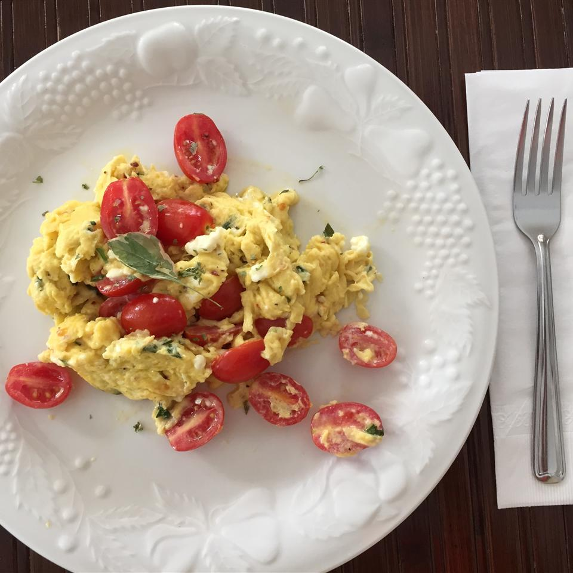

Chef John's Summer Scrambled Eggs

Summer scrambled eggs with tomatoes on a plate.
Chef John's Summer Scrambled Eggs are an energizing way to start your day!
This is a quick and easy breakfast recipe for you or your family.
The recipe only requires basic dairy and pantry staples to make.
Chef John's Summer Scrambled Eggs are also a great base to add in more savory ingredients.
Try on fresh toast!
Ingredients
3 large eggs
1 pinch red pepper flakes
9 cherry tomatoes, halved
2 tablespoons crumbled feta cheese
1 tablespoon very thinly sliced fresh basil leaves
olive oil
1 pinch sea salt
Steps
- Beat eggs and red pepper flakes together in a bowl.
- Stir tomatoes, feta, and basil leaves into egg mixture.
- Heat olive oil in a nonstick skillet over high heat until oil starts to shimmer.
- Pour egg mixture into hot oil and cook, without stirring, for 5 seconds.
- Cook and stir egg mixture until eggs are scrambled and softly set, about 30 seconds.
- Transfer eggs to a plate and sprinkle with sea salt.